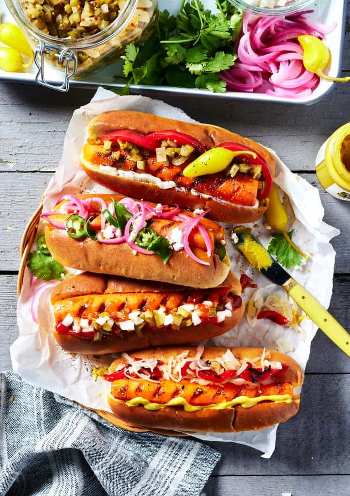

Zucchini Fritters
These crispy zucchini fritters are a great way to use up a summer surplus of zucchini. Serve them with your favorite sauce for a tasty side dish or snack!
READ MORE >>>>

Vegan Hot Dogs
I love these vegan hot dogs because they are true veggie dogs. They’re not made with soy protein, pea protein, or any other ingredients that commonly appear on the labels of store-bought vegan hot dogs.
READ MORE >>>>Ice cream cake
It’s the start of a long summer weekend – what better way to celebrate than with a homemade ice cream cake?!
READ MORE >>>>